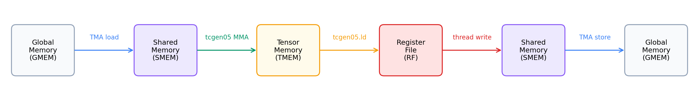

构建平铺 GEMM#
概述
从单个输出 tile 开始，根据 TIRx tile primitive 构建正确的 tile GEMM。
步骤 1 是单 tile GEMM，步骤 2 添加 K 循环累积，步骤 3 在 CTAs 上进行空间 tile 以获得完整矩阵。
正确性是第一位的；性能是接下来两章的工作。
GEMM 是整本书围绕的工作负载。它位于主导 GPU 时间的线性层、Attention 投影和卷积层之下，因此正确的 GEMM 和快速的 GEMM 之间的区别就是让大部分芯片空闲和使其饱和之间的区别。
这个差距太大了，无法一跃跨越。饱和的 kernel 使您可以同时调试内存移动、累积、平铺和 Tensor Core 调度，没有任何值得信赖的可比较。更安全的路径是从产生正确答案的最小 kernel 开始，然后一次增加一个决策。
本章先写正确的平铺 GEMM。前面的章节抽象介绍了 TIRx scope / layout / dispatch 模型；这里我们将其应用到真实的 kernel 上。我们从一个 128 x 128 输出 tile 开始，将其发展为处理全尺寸矩阵的 kernel，添加 K 维度累积，然后在许多 CTAs 上进行空间 tile。
这是从头到尾介绍单个 GEMM 优化路径的三章中的第一章。在本例中，我们构建了一个正确的平铺 kernel 并就此停止。下一章 (将 GEMM 与 TMA 进行 pipeline 处理) 将 thread copy 替换为 TMA，并通过 pipeline 将数据移动与计算重叠，而 通过 Warp 专业化和 cluster 扩展 GEMM 更进一步，使用 warp specialization 和 CTA clusters。每一章都建立在前一章的基础上，因此 kernels 会积累功能而不是重新开始。
它有助于将每个步骤视为对具有三个术语的单个合约的编辑：哪个 scope 运行该操作，哪个 layout 操作数块使用哪个 dispatch 路径执行它。大多数步骤都有一个主要更改，因此我们用一张小卡片打开它们，该小卡片会命名更改并调出确保重用安全所需的任何同步详细信息。步骤 1 建立路径其余部分编辑的基线。
GEMM#
GEMM 是位于线性层、Attention 投影和许多卷积实现下方的密集矩阵乘法，这就是为什么快速 GEMM kernel 几乎在任何地方都能带来回报。本教程中的示例使用 \(D = A B^{\top}\)：
\(A\) 的形状为 \(M \times K\)。
\(B\) 的形状为 \(N \times K\)。
\(D\) 的形状为 \(M \times N\)。
\(D[m,n] = \sum_k A[m,k] \cdot B[n,k]\)。
转置不是我们选择执行的额外操作；它与数据的存储方式无关。这些示例将 \(B\) 保留为长度为 \(K\) 的 \(N\) 行，这是通常出现的 layout 线性层权重，因此沿着 \(K\) 收缩自然会读取 \(B^{\top}\)，而无需任何重新排列。
在整个教程中，我们通过 kernel 的吞吐量（以 TFLOPS 为单位）来测量 kernel，并根据挂钟时间计算每个乘加的两个浮点运算：
GEMM 数据路径#
本教程中的每项优化都取决于数据所在的位置及其移动方式，因此值得在编写任何代码之前将其映射出来。从本质上讲，Blackwell GEMM kernel 仅围绕两个活动进行组织：在内存之间移动 tile 以及在它们上进行计算。下图跟踪了一个 tile 在从输入到输出的过程中所接触到的每个内存：

上图显示了以后每次优化都会编辑但不会替换的基线路径。从左到右读取：操作数块首先从 GMEM 移动到 SMEM； tcgen05.mma 然后消耗 SMEM 操作数并将累加器写入 TMEM；最后，epilogue 将 TMEM 读回寄存器，然后将结果存储到 GMEM。请记住这条链，因为下面的每一步都会改变某个 hop 的实现方式；它不会改变这些 hop 本身。
优化路径#
上面的简单数据路径足以获得正确答案，但它使大部分硬件闲置。本教程的其余部分通过每次添加一个 Blackwell 功能来缩小这一差距，每个功能都通过 TIRx tile primitive 表示。我们将遵循的路径依次访问这些功能：
TMA 异步移动 通过 Blackwell 的 hardware copy path 移动 GMEM <-> SMEM 块，并有 barrier 跟踪完成。
软件 pipeline使用多个 SMEM 阶段，以便下一个 K 区块的数据移动可以与当前区块上的 Tensor Core 计算重叠。
持久调度 保留固定的 CTAs 池，每个池通过 tile scheduler 处理许多输出 tile，而不是每个 tile 启动一个 CTA。
Warp 专业化 将生产者、MMA 消费者和写回角色划分为不同的 warpgroups。
CTA clusters 让两个 CTAs 在单个更大的 Blackwell MMA tile 上协作。
多消费者执行 使用多个消费者 warpgroups 一次计算 tile 的不同部分，从而提高计算密度。
步骤 1：顺序单块 GEMM#
仍然执行完整硬件路径的最简单的 GEMM 是计算单个输出 tile 的路径。这就是我们开始的地方。步骤 1 使用 K = 64 计算一个 128 x 128 输出 tile，该 tile 足够小，无需循环，并且数据路径的每一部分都恰好出现一次。无需重复任何内容，我们就可以在必须推理循环之前单独查看每一跳。
此步骤建立的内容：基线
范围：128 个 threads 中的单个 warpgroup 按顺序走完全程，一个阶段又一个阶段。
layout：A 和 B 块位于 SMEM 中，accumulator 位于 TMEM 中，结果通过 registers stage 输出。
调度：同步
Tx.copy承载 load，tcgen05运行 MMA。
单 tile 数据流#
确定基线合同后，接下来要确定的是一个 tile 穿过它的顺序。第一个 kernel 只在核心 GEMM 数据路径上行走一次，与数据流图中的 GMEM -> SMEM -> TMEM -> 寄存器 -> GMEM 链相同，没有循环。它分配工作内存，加载操作数，计算乘积，写回结果，并自行清理：
分配：SMEM（池分配器）、TMEM (
tcgen05.alloc)、mbarrierload：所有 128 个 threads 协作将 A 和 B tile 从 GMEM copy 到 SMEM（同步
Tx.copy）compute：单个 elected thread 发出
Tx.gemm_async+tcgen05.commit；所有 threads 等待 mbarrier回写：Warpgroup 读取 TMEM→寄存器；每个 thread 转换 fp32→fp16 并写入 GMEM
解除分配：TMEM 解除分配
第一个内核的四块#
完整的 kernel 只有几十行，但分成几个部分更容易理解。我们将分四部分（内存分配、同步加载、MMA、dispatch 和写回）来读取它，然后将它们组装成一个 kernel。一路上出现的 API 名称是第二部分中介绍的 TIRx tile primitive 词汇（TIRx 简介、TIRxlayoutAPI）。
内存分配。 kernel 首先为操作数划分共享内存，以及用于 TMEM 地址和 mbarrier 的插槽：
pool = T.SMEMPool()
tmem_addr = pool.alloc((1,), "uint32") # TMEM address (4 bytes)
mma_bar = pool.alloc((1,), "uint64", align=8) # mbarrier (8 bytes)
pool.move_base_to(1024) # Skip to offset 1024
Asmem = pool.alloc((BLK_M, BLK_K), a_type, layout=A_layout) # 128×64 fp16
Bsmem = pool.alloc((BLK_N, BLK_K), b_type, layout=B_layout) # 128×64 fp16
pool.commit()
这里有两个细节值得暂停。 pool.move_base_to(1024) 将 Asmem 和 Bsmem 推出到偏移量 1024，为它们上方的小元数据片段保留低地址，以便庞大的操作数块落在干净的边界上。并且 layout=A_layout 向 tma_shared_layout 请求 SMEM 的混合位置，TMA 和 tcgen05.mma 都可以直接读取，这正是 layout 作为合同义务第二部分描述的那种。
同步 load。 缓冲区就位后，操作数仍必须到达 SMEM。在第一个版本中，我们让 CTA 自己的 threads 进行 copy：
Tx.cta.copy(Asmem[:, :], A[:, :])
Tx.cta.copy(Bsmem[:, :], B[:, :])
T.cuda.cta_sync()
因为这里只有一个 tile（M=N=128，K=64），所以 copy 整个 A 和 B 就是整个 load。Tx.cta.copy(...) 使 CTA 在该 copy 上进行协作，每个 thread 负责自己的数据片。接下来的 T.cuda.cta_sync() 执行双重任务：它等待每个 thread 完成并发布其共享内存写入，以便当 MMA 稍后读取 Asmem 和 Bsmem 时，它会看到完整的 tile 而不是半填充的缓冲区。这个 thread-driven copy 也是我们要替换的第一个东西；下一章（将 GEMM 与 TMA 进行 pipeline 处理）将其替换为 TMA。
MMA dispatch。 现在操作数位于 SMEM 中，我们可以发出 MMA，并且我们从单个选定的 thread 中执行此操作：
if warp_id == 0:
if T.ptx.elect_sync():
Tx.gemm_async(tmem[:, :BLK_N], Asmem[:, :], Bsmem[:, :],
accum=False, dispatch="tcgen05", cta_group=1)
T.ptx.tcgen05.commit(mma_bar.ptr_to([0]), cta_group=1)
两个嵌套的 guard 分两步缩小了 issuer 的范围。外部 if warp_id == 0 仅保留 warpgroup 的 warp 0，然后内部 if T.ptx.elect_sync(): 在该 warp 内选择单个 active lane。它们总共留下一个 thread 来运行 Tx.gemm_async 和 tcgen05.commit。
值得澄清的是，单个 thread 的含义是什么，不含义是什么，因为自然阅读会产生误导。单个 issuing thread 并不意味着 single-thread 乘法。计算仍然是完整的 tile 级 MMA：硬件对 SMEM 操作数 layouts 和 TMEM accumulator layout 描述的 tile 执行协作乘法。关键是 Tx.gemm_async 是一条 tile operation，而不是一条硬件指令。K = 64 区块比硬件 MMA K-atom (MMA_K = 16) 更宽，因此该 tile operation 降低为沿 K 步进的一小段原始 tcgen05.mma 指令，并且 warpgroup 协同驱动它们。只有一个 thread issue tile operation 的原因是每个底层 tcgen05.mma 本身就是一个 single-instruction cooperative operation：一次启动驱动 tile MMA 的 K atom。如果所有 128 个 threads 都 issue 该序列，则同一工作会被 issue 128 次。最后，accum=False 标志告诉 MMA 覆盖 TMEM 目的地而不是添加到其中，这正是我们在这里想要的，因为没有先前的部分和要扩展。
回写。 产品现在位于 TMEM 中，但调用者希望将其返回到 GMEM 中，作为 fp16。因此，epilogue 必须通过寄存器将结果记录下来并一路投射：
Dreg = T.alloc_local((BLK_N,), acc_type) # per-thread fp32 register row
Dreg_f16 = T.alloc_local((BLK_N,), d_type) # same row, cast to fp16
Dreg_wg = Dreg.view(128, BLK_N, layout=TileLayout(S[(128, BLK_N) : (1@tid_in_wg, 1)]))
Tx.wg.copy_async(Dreg_wg[:, :], tmem[:, :BLK_N])
T.ptx.tcgen05.wait.ld()
Tx.cast(Dreg_f16[:], Dreg[:])
m_thr = T.meta_var(m_st + warp_id * 32 + lane_id)
Tx.copy(D[m_thr, n_st : n_st + BLK_N], Dreg_f16[:])
MMA 在 TMEM 中留下 128 x 128 fp32 累加器块。 fp32 是经过深思熟虑的：GEMM 对 K 上的许多乘积求和，并以更高的精度保持运行总和，从而减少可能累积的舍入误差。但 D 是 fp16，因此这些值不能直接输出。它们首先落在寄存器中，在那里缩小到 fp16，然后才达到 GMEM。
这两个寄存器缓冲区起着不同的作用。 Dreg 是 BLK_N 元素的每个 thread 缓冲区，而 Dreg_wg 是所选 layout 下这些相同寄存器的 warpgroup 范围视图：
TileLayout(S[(128, BLK_N) : (1@tid_in_wg, 1)])
此 layout 将 tile 的第一个维度映射到 warpgroup 的 threads：thread 0 拥有第 0 行，thread 1 拥有第 1 行，依此类推，直到第 127 行。第二个维度保留在每个 thread 自己的寄存器缓冲区，因此单个 thread 保存其一行的所有列。由于 warpgroup 中有 128 个 threads，tile 中有 128 行，因此 128 x 128 输出整齐地分为每个 thread 一行。
在该视图下读取累加器正是 Tx.wg.copy_async(Dreg_wg, tmem) 所做的事情，并且它降低到 Blackwell TMEM 加载路径 tcgen05.ld。由于该加载是异步的，因此 T.ptx.tcgen05.wait.ld() 必须在任何 thread 接触 Dreg 之前完成；否则，thread 将读取负载尚未填充的寄存器。
一旦等待返回，每个 thread 的私有 Dreg[:] 就保存其一个逻辑输出行的 fp32 值。 thread 将 Dreg_f16 中的范围缩小到 fp16，计算出它负责哪个全局行，
m_thr = T.meta_var(m_st + warp_id * 32 + lane_id)
并写入 D[m_thr, n_st:n_st + BLK_N]。行在四个 warps 之间干净地分区：warp 0 写入行 0-31，warp 1 写入行 32-63，warp 2 写入行 64-95，warp 3 写入行 96-127。
完整的内核#
现在我们将这四个部分重新拼接成一个可运行的 kernel（M=N=128，K=64）。进口优先：
import tvm
from tvm.script import tirx as T
from tvm.script.tirx import tile as Tx
from tvm.tirx.cuda.operator.tile_primitive.tma_utils import tma_shared_layout, SwizzleMode
from tvm.tirx.layout import TileLayout, S, TLane, TCol, tid_in_wg
kernel 采用后续步骤使用的相同 hgemm_vX(M, N, K) 样式进行包装。步骤 1 使用 M=N=128, K=64 运行，因此启动只包含一个输出 tile：
def hgemm_v1(M, N, K):
a_type = tvm.DataType("float16")
b_type = tvm.DataType("float16")
d_type = tvm.DataType("float16")
acc_type = tvm.DataType("float32")
BLK_M, BLK_N, BLK_K = 128, 128, 64
# MMA_M/MMA_N/MMA_K document the underlying hardware MMA tile; they are not
# passed to gemm_async (which derives the MMA shape from the operand and
# accumulator tiles), so the later steps omit them.
MMA_M, MMA_N, MMA_K = 128, 128, 16
A_layout = tma_shared_layout(a_type, SwizzleMode.SWIZZLE_128B_ATOM, (BLK_M, BLK_K))
B_layout = tma_shared_layout(b_type, SwizzleMode.SWIZZLE_128B_ATOM, (BLK_N, BLK_K))
@T.prim_func
def kernel(
A: T.Buffer((M, K), a_type),
B: T.Buffer((N, K), b_type),
D: T.Buffer((M, N), d_type),
):
T.device_entry()
# Step 1 is a single-tile kernel: M = BLK_M and N = BLK_N, so the grid
# is 1x1. Starting with a 1x1 grid keeps the per-CTA tile offsets
# (m_st, n_st) trivially zero; Steps 3+ generalise this to larger M / N.
bx, by = T.cta_id([M // BLK_M, N // BLK_N])
wg_id = T.warpgroup_id([1]) # single warpgroup, so wg_id is always 0 (unused below)
warp_id = T.warp_id_in_wg([4])
lane_id = T.lane_id([32])
# --- SMEM allocation ---
pool = T.SMEMPool()
tmem_addr = pool.alloc((1,), "uint32")
mma_bar = pool.alloc((1,), "uint64", align=8)
pool.move_base_to(1024)
Asmem = pool.alloc((BLK_M, BLK_K), a_type, layout=A_layout)
Bsmem = pool.alloc((BLK_N, BLK_K), b_type, layout=B_layout)
pool.commit()
# --- Barrier + TMEM init (warp 0 only) ---
if warp_id == 0:
if lane_id == 0:
T.ptx.mbarrier.init(mma_bar.ptr_to([0]), 1)
T.ptx.tcgen05.alloc(T.address_of(tmem_addr), n_cols=512, cta_group=1)
T.ptx.fence.proxy_async("shared::cta")
T.ptx.fence.mbarrier_init()
T.cuda.cta_sync()
tmem = T.decl_buffer(
(128, 512), "float32", scope="tmem", allocated_addr=tmem_addr[0],
layout=TileLayout(S[(128, 512) : (1@TLane, 1@TCol)])
)
m_st = T.meta_var(bx * BLK_M)
n_st = T.meta_var(by * BLK_N)
phase_mma: T.int32 = 0
# --- Load: all threads copy global -> shared (synchronous).
# With M=BLK_M and N=BLK_N the slices below cover the full matrices;
# the slice form is kept so the diff to Step 3 (multi-tile) is minimal.
Tx.cta.copy(Asmem[:, :], A[m_st:m_st + BLK_M, :])
Tx.cta.copy(Bsmem[:, :], B[n_st:n_st + BLK_N, :])
T.cuda.cta_sync()
# --- Compute: single elected thread issues MMA ---
if warp_id == 0:
if T.ptx.elect_sync():
Tx.gemm_async(
tmem[:, :BLK_N], Asmem[:, :], Bsmem[:, :],
accum=False, dispatch="tcgen05", cta_group=1
)
T.ptx.tcgen05.commit(mma_bar.ptr_to([0]), cta_group=1)
T.ptx.mbarrier.try_wait(mma_bar.ptr_to([0]), phase_mma)
# --- Writeback: TMEM -> RF -> GMEM ---
Dreg = T.alloc_local((BLK_N,), acc_type)
Dreg_f16 = T.alloc_local((BLK_N,), d_type)
Dreg_wg = Dreg.view(128, BLK_N,
layout=TileLayout(S[(128, BLK_N) : (1@tid_in_wg, 1)]))
Tx.wg.copy_async(Dreg_wg[:, :], tmem[:, :BLK_N])
T.ptx.tcgen05.wait.ld()
Tx.cast(Dreg_f16[:], Dreg[:])
m_thr = T.meta_var(m_st + warp_id * 32 + lane_id)
Tx.copy(D[m_thr, n_st : n_st + BLK_N], Dreg_f16[:])
# --- Deallocate TMEM ---
T.cuda.cta_sync()
if warp_id == 0:
T.ptx.tcgen05.relinquish_alloc_permit(cta_group=1)
T.ptx.tcgen05.dealloc(tmem_addr[0], n_cols=512, cta_group=1)
return kernel
接下来的每个 GEMM 步骤都以相同的方式编译、运行和检查自身，因此我们仅在此处完整拼写该脚手架一次，从那时起仅显示 kernel。要运行后续步骤，请放入 hgemm_vX 和匹配问题大小来代替下面的内容。值得记住的一个警告是：为每个新的 Python 会话编译一个步骤并在尝试另一个之前重新启动，因为示例重用内部名称并且编译器保存每个会话的状态。
import torch
target = tvm.target.Target("cuda")
device = torch.device('cuda') # gpu(0)
M, N, K = 128, 128, 64
kernel = hgemm_v1(M, N, K)
with target:
ex = tvm.compile(tvm.IRModule({"main": kernel}), target=target, tir_pipeline="tirx")
torch.cuda.empty_cache()
torch.cuda.synchronize()
A_tensor = torch.randn(M, K, dtype=torch.float16, device=device)
B_tensor = torch.randn(N, K, dtype=torch.float16, device=device)
D_tensor = torch.zeros(M, N, dtype=torch.float16, device=device)
# ex.mod(...) takes torch tensors directly, the same call form used in every chapter.
ex.mod(A_tensor, B_tensor, D_tensor)
D_ref = (A_tensor.float() @ B_tensor.float().T).half()
max_err = float((D_tensor - D_ref).abs().max())
print(f"Max error vs torch reference: {max_err:.6f}")
# Relative tolerance, like the warp-specialization and FlashAttention cells:
# output magnitude grows with K, so a fixed absolute bound would fail at larger K.
torch.testing.assert_close(D_tensor, D_ref, rtol=2e-2, atol=1e-2)
print("PASS")
# Optional timing for larger kernels.
ITERS = 10
for _ in range(3):
ex.mod(A_tensor, B_tensor, D_tensor)
torch.cuda.synchronize()
start = torch.cuda.Event(enable_timing=True)
end = torch.cuda.Event(enable_timing=True)
start.record()
for _ in range(ITERS):
ex.mod(A_tensor, B_tensor, D_tensor)
end.record()
torch.cuda.synchronize()
ms = start.elapsed_time(end) / ITERS
tflops = 2 * M * N * K / ms / 1e9
print(f"Performance: {ms:.3f} ms, {tflops:.1f} TFLOPS")
步骤 1 到 3 故意以较小的尺寸运行（此处为 128×128，步骤 3 中为 256³），以使这些初步演练易于遵循。 通过 Warp 专业化和 cluster 扩展 GEMM 末尾的跨步骤端到端结果表采用相反的方法：它以单个 M=N=K=4096 大小测量每个步骤，包括第 1 步算法，因此其加速比可以直接比较。
Single-Tile 内核的限制#
这个 kernel 是正确的，这就是步骤 1 的全部要点，但仅在非常狭窄的设置中才是正确的。故意加入了四个限制，其余的优化路径一次解决一个：
它仅处理单个 K 块，因此它无法收缩大型 K。
它仅处理单个输出 tile，因此 M 和 N 固定为 128。
它使用同步 GMEM -> SMEM copy 而不是 TMA。
它不会将数据移动与计算重叠，因此两者不会同时运行。
步骤 2：K-循环累加#
要删除的第一个限制是最小的限制。第 1 步仅处理单个 64 宽 K tile，但实际矩阵收缩的范围远不止于此。在步骤 2 中，我们保留单个输出 tile，但让 K 跨越许多 64 宽的块。
这个想法很简单：每个块重复一次加载 -> MMA -> 等待序列，并让每个 MMA 累积到同一个 TMEM 槽中。事实证明，真正的工作在于同步。在迭代中重用一个 mbarrier 引入了本章的第一个真正的正确性风险。如果代码跟踪错误的阶段，则等待可能会在其 MMA 实际完成之前返回，从而默默地破坏结果。下面的机制准确地展示了这种情况是如何出错的，以及如何避免它。
此步骤更改的内容：layout 重用
范围：不变，仍然是单个 warpgroup。
layout/重用：相同的 SMEM 块对和 TMEM 累加器槽在 K 环路中重用。没有分配新的存储空间；操作数块流过一对固定的缓冲区，累加器状态保留在一个 TMEM 槽中。
同步：重用的 MMA barrier 必须在每个 K 块上通过正确的阶段，否则稍后的等待可以观察到更早的完成。
调度：不变。
K-回路力学#
步骤 1 收缩在单个 64 宽 K 块上；在这里，我们保留其单个输出块，但让 K 运行只要矩阵需要。为了覆盖大于 64 的 K，我们将 K 分成 BLK_K=64 块。每次迭代将下一个 A 和 B K 切片加载到 SMEM 中并发出 Tx.gemm_async。 accum 标志是将这些块拼接在一起形成一个点积：在第一个块上，accum=False 初始化 TMEM 累加器，在后面的每个块上，accum=True 将该块的乘积添加到已经位于 TMEM 中的运行总和中。
同步是需要关注的地方。我们为每个 MMA 完成重复使用一个 mbarrier，并且安全地重复使用它可以归结为跟踪我们正在等待哪个 barrier 阶段。 mbarrier 携带 1 位 phase，即 0 或 1，并且每次预期到达着陆时都会翻转到另一个值。微妙的部分是等待条件本身：try_wait(bar, phase) 会阻塞，直到 barrier 的内部 phase不同于 phase 参数。因此，我们传递的参数必须指定我们期望留下的阶段，而不是我们等待到达的阶段：
K 迭代 |
等待前本地 |
|
等待后本地更新 |
|---|---|---|---|
0 |
0 |
barrier 翻转为 1 |
|
1 |
1 |
barrier 翻转为 0 |
|
2 |
0 |
barrier 翻转为 1 |
|
单行 phase_mma ^= 1 使该表保持诚实。删除它，第二次迭代仍然调用 try_wait(bar, 0)，但是在第一个 MMA 之后 barrier 已经翻转到阶段 1，因此等待会在第二个 MMA 完成之前看到不匹配并立即返回。然后，kernel 读取半计算累加器并报告错误答案，但完全没有错误。这是一个可以完美编译和运行的错误，这正是 phase 翻转值得如此关注的原因。
完整的内核#
下面的完整 kernel 只是步骤 1，其中包含 K 环路和折叠的 phase 翻转。导入与之前相同：
import tvm
from tvm.script import tirx as T
from tvm.script.tirx import tile as Tx
from tvm.tirx.cuda.operator.tile_primitive.tma_utils import tma_shared_layout, SwizzleMode
from tvm.tirx.layout import TileLayout, S, TLane, TCol, tid_in_wg
它被包裹在 hgemm_v2(M, N, K) 中。 grid 仍然是 [1, 1]，因为我们仍在计算单个输出 tile；所增长的只是其 K 范围：
def hgemm_v2(M, N, K):
a_type = tvm.DataType("float16")
b_type = tvm.DataType("float16")
d_type = tvm.DataType("float16")
acc_type = tvm.DataType("float32")
BLK_M, BLK_N, BLK_K = 128, 128, 64
K_TILES = K // BLK_K
A_layout = tma_shared_layout(a_type, SwizzleMode.SWIZZLE_128B_ATOM, (BLK_M, BLK_K))
B_layout = tma_shared_layout(b_type, SwizzleMode.SWIZZLE_128B_ATOM, (BLK_N, BLK_K))
@T.prim_func
def kernel(
A: T.Buffer((M, K), a_type),
B: T.Buffer((N, K), b_type),
D: T.Buffer((M, N), d_type),
):
T.device_entry()
bx, by = T.cta_id([M // BLK_M, N // BLK_N]) # still one output tile (M=N=128)
wg_id = T.warpgroup_id([1])
warp_id = T.warp_id_in_wg([4])
lane_id = T.lane_id([32])
pool = T.SMEMPool()
tmem_addr = pool.alloc((1,), "uint32")
mma_bar = pool.alloc((1,), "uint64", align=8)
pool.move_base_to(1024)
Asmem = pool.alloc((BLK_M, BLK_K), a_type, layout=A_layout)
Bsmem = pool.alloc((BLK_N, BLK_K), b_type, layout=B_layout)
pool.commit()
if warp_id == 0:
if lane_id == 0:
T.ptx.mbarrier.init(mma_bar.ptr_to([0]), 1)
T.ptx.tcgen05.alloc(T.address_of(tmem_addr), n_cols=512, cta_group=1)
T.ptx.fence.proxy_async("shared::cta")
T.ptx.fence.mbarrier_init()
T.cuda.cta_sync()
tmem = T.decl_buffer(
(128, 512), "float32", scope="tmem", allocated_addr=tmem_addr[0],
layout=TileLayout(S[(128, 512) : (1@TLane, 1@TCol)]))
phase_mma: T.int32 = 0
m_st = T.meta_var(bx * BLK_M)
n_st = T.meta_var(by * BLK_N)
# === K-loop: iterate over K in chunks of BLK_K ===
for i in T.serial(K_TILES): # serial device loop (keeps the full-K A/B parameters correctly shaped)
# Load the i-th K chunk
Tx.cta.copy(Asmem[:, :], A[:, i*BLK_K:(i+1)*BLK_K])
Tx.cta.copy(Bsmem[:, :], B[:, i*BLK_K:(i+1)*BLK_K])
T.cuda.cta_sync()
# MMA: accum=False for first tile, True for rest
if warp_id == 0:
if T.ptx.elect_sync():
Tx.gemm_async(tmem[:, :BLK_N], Asmem[:, :], Bsmem[:, :],
accum=(i != 0), dispatch="tcgen05", cta_group=1)
T.ptx.tcgen05.commit(mma_bar.ptr_to([0]), cta_group=1)
# Wait for MMA, then flip phase
T.ptx.mbarrier.try_wait(mma_bar.ptr_to([0]), phase_mma)
phase_mma ^= 1
# === Writeback (same as Step 1) ===
Dreg = T.alloc_local((BLK_N,), acc_type)
Dreg_f16 = T.alloc_local((BLK_N,), d_type)
Dreg_wg = Dreg.view(128, BLK_N,
layout=TileLayout(S[(128, BLK_N) : (1@tid_in_wg, 1)]))
Tx.wg.copy_async(Dreg_wg[:, :], tmem[:, :BLK_N])
T.ptx.tcgen05.wait.ld()
Tx.cast(Dreg_f16[:], Dreg[:])
m_thr = T.meta_var(m_st + warp_id * 32 + lane_id)
Tx.copy(D[m_thr, n_st : n_st + BLK_N], Dreg_f16[:])
T.cuda.cta_sync()
if warp_id == 0:
T.ptx.tcgen05.relinquish_alloc_permit(cta_group=1)
T.ptx.tcgen05.dealloc(tmem_addr[0], n_cols=512, cta_group=1)
return kernel
步骤 3：空间平铺（Multi-CTA）#
K 循环负责收缩尺寸，但 M 和 N 仍然固定在单个 128 x 128 块上。实际输出远大于一个 tile，因此基本 kernel 的最后一部分是同时用多个 tile 覆盖 M 和 N。步骤 3 启动 CTAs 的 2D grid，每个输出 tile 一个，并让 GPU 并行计算所有 tile。该示例使用 M=N=K=256，这给出了 2x2 grid 的 tile，足以使索引变得不那么简单，而不会掩埋它。
此步骤更改的内容：范围
范围：CTAs 的 2D grid，每个 CTA 拥有一个 128 x 128 输出 tile。
layout：不变；在 CTA 中，这与步骤 2 相同的 SMEM/TMEM/寄存器路径。
调度：不变。
网格映射#
grid 形状直接来自于平铺：每 128 x 128 输出平铺一个 CTA，我们总共需要 [M // BLK_M, N // BLK_N] CTAs。与步骤 2 相比，唯一真正的新工作是教导每个 CTA 矩阵的哪个切片是其要计算的切片。
CTA (bx, by) 拥有此输出区域：
D[bx * BLK_M : (bx + 1) * BLK_M,
by * BLK_N : (by + 1) * BLK_N]
为了生成它，CTA 的 K 循环重复加载其自己的 A 行带和 B 列带的匹配 K 切片：
A[bx * BLK_M : (bx + 1) * BLK_M, k : k + BLK_K]
B[by * BLK_N : (by + 1) * BLK_N, k : k + BLK_K]
索引直接遵循 D = A @ B.T 约定：bx 选择 A 和 D 的行，而 by 选择 B 的行，一旦应用转置，它们就会成为 D 的列。
每个 CTA 一个 tile 是最简单的有效映射，但也很浪费。一行中的每个 CTA 都会从 GMEM 重新加载相同的 A tile，而列中的每个 CTA 都会重新加载相同的 B tile，因此不会重用相邻 CTAs 已经拉入的数据。我们暂时将这种浪费留在原地； persistent scheduling（将 GEMM 与 TMA 进行 pipeline 处理 中的第 6 步）返回到它并使这些共享操作数在 L2 中保持热状态。
尝试与您的代理一起：使用 M=N=K=256、BLK_M=BLK_N=128 和 BLK_K=64，要求其跟踪 CTA (1, 0) 和 CTA (0, 1)。对于每个 CTA，列出 m_st、n_st、为每个 K 迭代加载的 A 和 B 切片以及写入的 D 区域。由于 kernel 计算 D = A @ B.T，哪些 B 行变成了 D 列？
完整的内核#
kernel 再次进入步骤 2，这次仅进行两处更改：grid 形状和每个 CTA 偏移量。内部 K 循环和写回未受影响。导入是相同的：
import tvm
from tvm.script import tirx as T
from tvm.script.tirx import tile as Tx
from tvm.tirx.cuda.operator.tile_primitive.tma_utils import tma_shared_layout, SwizzleMode
from tvm.tirx.layout import TileLayout, S, TLane, TCol, tid_in_wg
grid 变为 [M // BLK_M, N // BLK_N] 而不是 [1, 1]，并且加载和存储现在由 CTA 自己的 m_st 和 n_st 抵消：
def hgemm_v3(M, N, K):
a_type = tvm.DataType("float16")
b_type = tvm.DataType("float16")
d_type = tvm.DataType("float16")
acc_type = tvm.DataType("float32")
BLK_M, BLK_N, BLK_K = 128, 128, 64
K_TILES = K // BLK_K
A_layout = tma_shared_layout(a_type, SwizzleMode.SWIZZLE_128B_ATOM, (BLK_M, BLK_K))
B_layout = tma_shared_layout(b_type, SwizzleMode.SWIZZLE_128B_ATOM, (BLK_N, BLK_K))
@T.prim_func
def kernel(
A: T.Buffer((M, K), a_type),
B: T.Buffer((N, K), b_type),
D: T.Buffer((M, N), d_type),
):
T.device_entry()
# 2D grid: one CTA per 128x128 output tile
bx, by = T.cta_id([M // BLK_M, N // BLK_N])
wg_id = T.warpgroup_id([1])
warp_id = T.warp_id_in_wg([4])
lane_id = T.lane_id([32])
pool = T.SMEMPool()
tmem_addr = pool.alloc((1,), "uint32")
mma_bar = pool.alloc((1,), "uint64", align=8)
pool.move_base_to(1024)
Asmem = pool.alloc((BLK_M, BLK_K), a_type, layout=A_layout)
Bsmem = pool.alloc((BLK_N, BLK_K), b_type, layout=B_layout)
pool.commit()
if warp_id == 0:
if lane_id == 0:
T.ptx.mbarrier.init(mma_bar.ptr_to([0]), 1)
T.ptx.tcgen05.alloc(T.address_of(tmem_addr), n_cols=512, cta_group=1)
T.ptx.fence.proxy_async("shared::cta")
T.ptx.fence.mbarrier_init()
T.cuda.cta_sync()
tmem = T.decl_buffer(
(128, 512), "float32", scope="tmem", allocated_addr=tmem_addr[0],
layout=TileLayout(S[(128, 512) : (1@TLane, 1@TCol)]))
phase_mma: T.int32 = 0
# Per-CTA tile offsets
m_st = T.meta_var(bx * BLK_M)
n_st = T.meta_var(by * BLK_N)
# K-loop with offset A and B slices
for i in T.serial(K_TILES): # serial device loop (keeps the full-K A/B parameters correctly shaped)
Tx.cta.copy(Asmem[:, :], A[m_st:m_st+BLK_M, i*BLK_K:(i+1)*BLK_K])
Tx.cta.copy(Bsmem[:, :], B[n_st:n_st+BLK_N, i*BLK_K:(i+1)*BLK_K])
T.cuda.cta_sync()
if warp_id == 0:
if T.ptx.elect_sync():
Tx.gemm_async(tmem[:, :BLK_N], Asmem[:, :], Bsmem[:, :],
accum=(i != 0), dispatch="tcgen05", cta_group=1)
T.ptx.tcgen05.commit(mma_bar.ptr_to([0]), cta_group=1)
T.ptx.mbarrier.try_wait(mma_bar.ptr_to([0]), phase_mma)
phase_mma ^= 1
# Writeback to the correct output tile
Dreg = T.alloc_local((BLK_N,), acc_type)
Dreg_f16 = T.alloc_local((BLK_N,), d_type)
Dreg_wg = Dreg.view(128, BLK_N,
layout=TileLayout(S[(128, BLK_N) : (1@tid_in_wg, 1)]))
Tx.wg.copy_async(Dreg_wg[:, :], tmem[:, :BLK_N])
T.ptx.tcgen05.wait.ld()
Tx.cast(Dreg_f16[:], Dreg[:])
m_thr = T.meta_var(m_st + warp_id * 32 + lane_id)
Tx.copy(D[m_thr, n_st:n_st+BLK_N], Dreg_f16[:])
T.cuda.cta_sync()
if warp_id == 0:
T.ptx.tcgen05.relinquish_alloc_permit(cta_group=1)
T.ptx.tcgen05.dealloc(tmem_addr[0], n_cols=512, cta_group=1)
return kernel
练习#
在步骤 1-3 中，
Tx.copy在 MMA 之前将 A 和 B 块移动到 SMEM 中。为什么 kernel 在Tx.gemm_async读取这些 SMEM tile 之前需要T.cuda.cta_sync()？在步骤 2 中，如果从 K 环路中删除
phase_mma ^= 1会发生什么？ kernel 是否等待每个 MMA，或者稍后的等待是否会过早结束？对于 M=N=4096 且 BLK_M=BLK_N=128，第 3 步中启动了多少个 CTAs？哪些操作数块在逻辑上可以在相邻的 CTAs 之间重复使用，步骤 3 是否利用了这种重复使用？